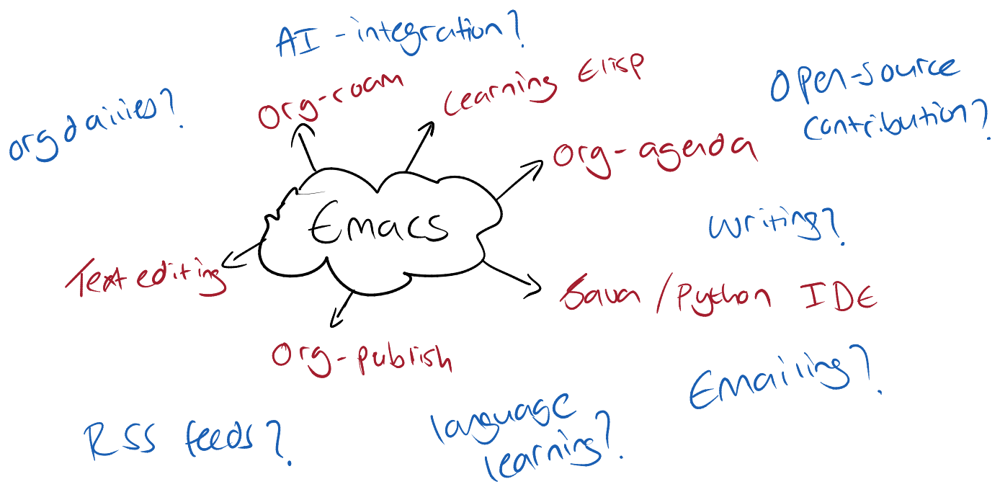

What Do I Want To Do With Emacs
I first started using Emacs (and Linux for that matter) since around the end of 2023, and it's been well over a year of trial and error with this text editor. At first I was using this for all sorts of things such as:
- Dashboard
- Agenda
- Text editing
- Magit (version controlling)
- Syncthing Management
… and the list goes on.
One thing I realised is just how powerful Emacs really is, just recently I found out that you can use the emoji-insert to insert emojis! Some have even gone to say it's an operating system in its own right. So this prompted the question today, what do I want from Emacs?
After some thinking I narrowed it down and collated it in the following diagram:

Of course this is the current workflow, where the text in red are items I currently use Emacs for (high percentage likelihood this will increase), and the items in blue text are ones I plan on adding to my workflow. The main thing I want from this is to ensure consistency in daily practices.
- Org-roam bodies a huge aspect of the daily workflow, as it is a second brain where all information is stored.
- Learning elisp is primarily done in the scratch buffer and through projects.
- Java/Python IDE for when I'm leetcoding or doing any arbitrary project.
- Text editing mainly relates to config files for the arch setup.
- Org-agenda (more on this here).
- Org-publish: see setup.